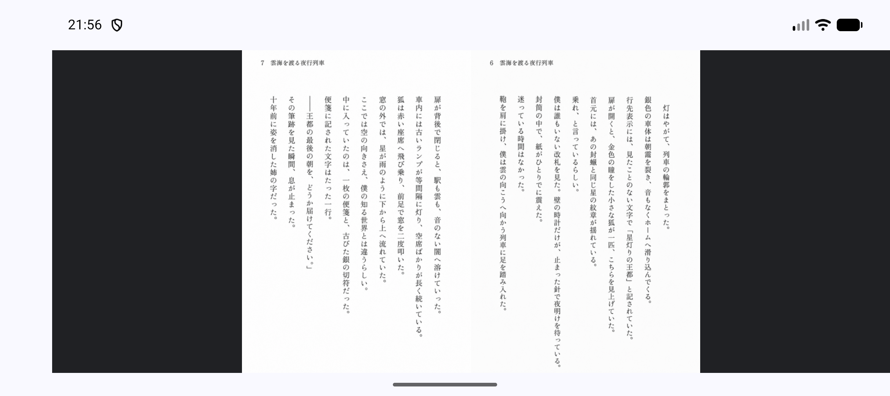
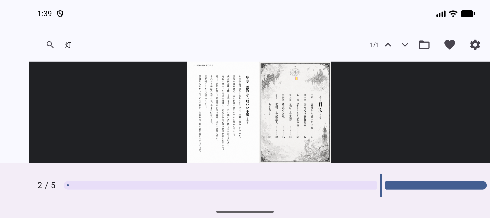
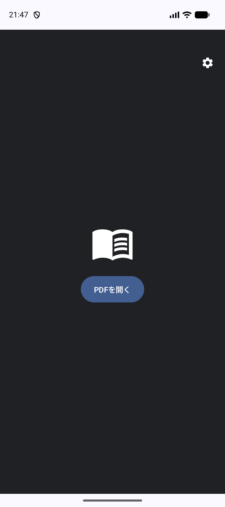
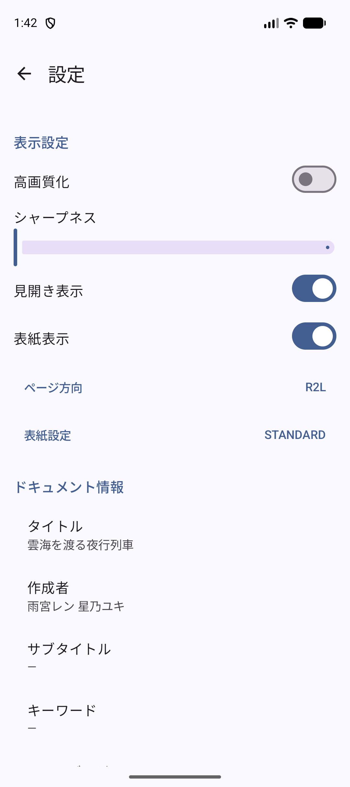

日本特有の「見開き」と「右綴じ」を快適に楽しむためのAndroid用PDFビューア
2つのページを横に並べてシームレスに表示。漫画や画集の迫力をそのままに楽しめます。
日本の書籍に最適な右から左への読書順序をネイティブサポート。ページ移動も直感的です。
PDFのメタデータから最適な表示レイアウトと綴じ方向を自動で判別します。
高速なテキスト検索と、ヒット箇所の精密なハイライト表示機能を搭載しています。




MihirakiPDFViewerはプライバシーを最優先に設計されています。
※Googleドライブ等のクラウドストレージからファイルを開く場合にのみ、各サービスのプロバイダを介した通信が発生します。